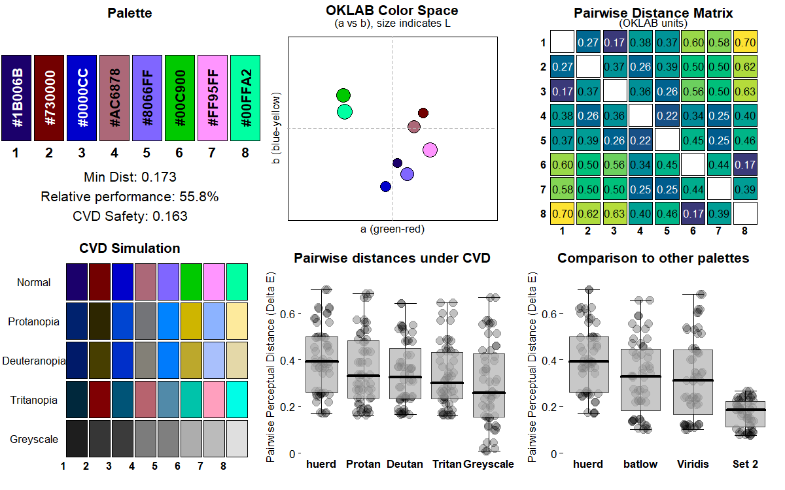
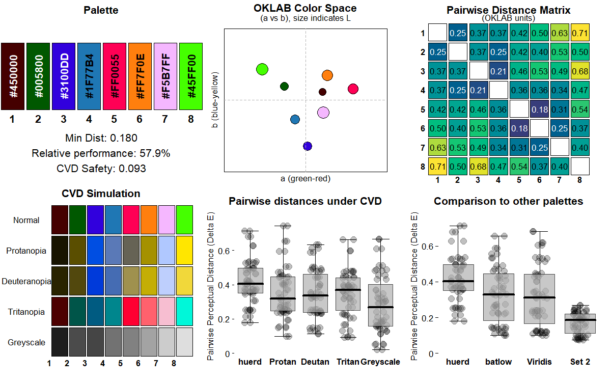

A discrete color palette generator with support for fixed colors, optimized for color vision deficient viewers. Features 4 different optimization algorithms (COBYLA, SANN, DIRECT, Nelder-Mead) and a multi-objective optimization framework for advanced color palette generation.
Installation
You can install the development version of huerd from GitHub with:
# install.packages("pak")
pak::pak("sims1253/huerd")Basic Example
Generate a palette with 5 colors:
library(huerd)
palette <- generate_palette(8, progress = FALSE)
print(palette)
#>
#> -- huerd Color Palette (8 colors) --
#> Colors:
#> [ 1] #7C0000
#> [ 2] #001DFF
#> [ 3] #B1658C
#> [ 4] #FF0000
#> [ 5] #FF00FF
#> [ 6] #FF8100
#> [ 7] #00F000
#> [ 8] #00FFFF
#>
#> -- Quality Metrics Summary --
#> * Min. Perceptual Distance (OKLAB): 0.157
#> * Optimizer Performance Ratio : 50.8%
#> * Min. CVD-Safe Distance (OKLAB) : 0.079
#>
#> -- Generation Details --
#> * Optimizer Iterations: 853
#> * Optimizer Status: NLOPT_XTOL_REACHED: Optimization stopped because xtol_rel or xtol_abs (above) was reached.Constrained Color Palettes
Include specific colors while optimizing the remaining colors:
library(huerd)
palette <- generate_palette(
n = 8,
include_colors = c("#4A6B8A", "#E5A04C"),
progress = FALSE
)
print(palette)
#>
#> -- huerd Color Palette (8 colors) --
#> Colors:
#> [ 1] #064B49
#> [ 2] #4A6B8A
#> [ 3] #0091D9
#> [ 4] #FF001D
#> [ 5] #E5A04C
#> [ 6] #9EB5D7
#> [ 7] #7CF993
#> [ 8] #E0DDFF
#>
#> -- Quality Metrics Summary --
#> * Min. Perceptual Distance (OKLAB): 0.142
#> * Optimizer Performance Ratio : 45.8%
#> * Min. CVD-Safe Distance (OKLAB) : 0.119
#>
#> -- Generation Details --
#> * Optimizer Iterations: 366
#> * Optimizer Status: NLOPT_XTOL_REACHED: Optimization stopped because xtol_rel or xtol_abs (above) was reached.Multi-Optimizer Support
Choose from 4 different optimization algorithms based on your needs:
library(huerd)
# COBYLA: Default deterministic optimizer (fast, reliable)
cobyla_palette <- generate_palette(6, optimizer = "nloptr_cobyla", progress = FALSE)
# SANN: Stochastic simulated annealing (excellent quality)
set.seed(42) # For reproducibility
sann_palette <- generate_palette(6, optimizer = "sann", progress = FALSE)
# DIRECT: Global optimization (note: may need tuning for some cases)
direct_palette <- generate_palette(6, optimizer = "nlopt_direct", progress = FALSE)
# Nelder-Mead: Derivative-free local optimization
neldermead_palette <- generate_palette(6, optimizer = "nlopt_neldermead", progress = FALSE)
cat("COBYLA:", paste(cobyla_palette, collapse = ", "), "\n")
#> COBYLA: #301200, #5C00D3, #8E2A58, #FF5100, #00ADFF, #C8F746
cat("SANN:", paste(sann_palette, collapse = ", "), "\n")
#> SANN: #000900, #121C00, #200074, #A90900, #00CFFF, #A8FF00
cat("DIRECT:", paste(direct_palette, collapse = ", "), "\n")
#> DIRECT: #636363, #636363, #636363, #636363, #636363, #636363
cat("Nelder-Mead:", paste(neldermead_palette, collapse = ", "), "\n")
#> Nelder-Mead: #002C7C, #6A0000, #A200FF, #D64600, #FF91FF, #00E956Multi-Objective Framework
The package includes a multi-objective optimization framework that lays the foundation for future enhancements:
library(huerd)
# Current: Pure distance optimization (default)
distance_palette <- generate_palette(
n = 6,
weights = c(distance = 1), # Explicit distance weighting
optimizer = "nloptr_cobyla",
progress = FALSE
)
# Future versions will support additional objectives like:
# weights = c(distance = 0.7, aesthetics = 0.3)
# weights = c(distance = 0.8, uniformity = 0.2)
print(distance_palette)
#>
#> -- huerd Color Palette (6 colors) --
#> Colors:
#> [ 1] #003A00
#> [ 2] #5D00C4
#> [ 3] #0074FE
#> [ 4] #F22100
#> [ 5] #FF85EA
#> [ 6] #E5FFF7
#>
#> -- Quality Metrics Summary --
#> * Min. Perceptual Distance (OKLAB): 0.209
#> * Optimizer Performance Ratio : 57.2%
#> * Min. CVD-Safe Distance (OKLAB) : 0.139
#>
#> -- Generation Details --
#> * Optimizer Iterations: 341
#> * Optimizer Status: NLOPT_XTOL_REACHED: Optimization stopped because xtol_rel or xtol_abs (above) was reached.Diagnostic Dashboard
Analyze palette quality with a dashboard:
library(huerd)
palette <- generate_palette(8, progress = FALSE)
plot_palette_analysis(palette)
Palette Quality Evaluation
Pure data provider for detailed post-hoc analysis:
library(huerd)
palette <- generate_palette(8, progress = FALSE)
evaluation <- evaluate_palette(palette)
# Access raw metrics (no subjective scoring)
cat("Minimum distance:", evaluation$distances$min, "\n")
#> Minimum distance: 0.1933694
cat("Performance ratio:", evaluation$distances$performance_ratio * 100, "%\n")
#> Performance ratio: 62.40473 %
cat("CVD worst case:", evaluation$cvd_safety$worst_case_min_distance, "\n")
#> CVD worst case: 0.1472094Custom Parameters
Fine-tune the generation process with advanced options:
library(huerd)
palette <- generate_palette(
n = 8,
initialization = "harmony", # Color harmony-based initialization
init_lightness_bounds = c(0.3, 0.8), # Constrain lightness range
max_iterations = 2000, # Increased iterations
optimizer = "nloptr_cobyla", # Use COBYLA for reliability
progress = FALSE
)
print(palette)
#>
#> -- huerd Color Palette (8 colors) --
#> Colors:
#> [ 1] #735500
#> [ 2] #997600
#> [ 3] #00935F
#> [ 4] #8B74E6
#> [ 5] #D16D8D
#> [ 6] #91A438
#> [ 7] #CB96BD
#> [ 8] #8EF4FF
#>
#> -- Quality Metrics Summary --
#> * Min. Perceptual Distance (OKLAB): 0.101
#> * Optimizer Performance Ratio : 32.7%
#> * Min. CVD-Safe Distance (OKLAB) : 0.081
#>
#> -- Generation Details --
#> * Optimizer Iterations: 650
#> * Optimizer Status: NLOPT_XTOL_REACHED: Optimization stopped because xtol_rel or xtol_abs (above) was reached.Optimizer Selection Guide
Choose the right optimizer for your use case:
library(huerd)
# For general use: COBYLA (default)
general_palette <- generate_palette(5, optimizer = "nloptr_cobyla", progress = FALSE)
# For highest quality: SANN (stochastic)
set.seed(123)
quality_palette <- generate_palette(5, optimizer = "sann", max_iterations = 3000, progress = FALSE)
# For scientific reproducibility: DIRECT (note: may need tuning)
scientific_palette <- generate_palette(5, optimizer = "nlopt_direct", progress = FALSE)
# For alternative deterministic approach: Nelder-Mead
alternative_palette <- generate_palette(5, optimizer = "nlopt_neldermead", progress = FALSE)
cat("General (COBYLA):", paste(general_palette, collapse = ", "), "\n")
#> General (COBYLA): #1C1D00, #7D0085, #FF0000, #0088FF, #00FF00
cat("Quality (SANN):", paste(quality_palette, collapse = ", "), "\n")
#> Quality (SANN): #000500, #880000, #5F5A95, #FF9F00, #00F9FF
cat("Scientific (DIRECT):", paste(scientific_palette, collapse = ", "), "\n")
#> Scientific (DIRECT): #636363, #636363, #636363, #636363, #636363
cat("Alternative (Nelder-Mead):", paste(alternative_palette, collapse = ", "), "\n")
#> Alternative (Nelder-Mead): #420000, #A000E7, #FF0000, #FF8CFF, #FDFFDBComplete Workflow Example
library(huerd)
# 1. Generate brand palette with advanced optimization
brand_palette <- generate_palette(
n = 8,
include_colors = c("#1f77b4", "#ff7f0e"), # Fixed brand colors
fixed_aesthetic_influence = 0.9,
initialization = "harmony",
optimizer = "nloptr_cobyla", # Use COBYLA for reliability
weights = c(distance = 1), # Multi-objective framework
return_metrics = TRUE,
progress = TRUE
)
#> Preparing for palette generation...
#> Adapting initialization from fixed colors' aesthetics...
#> Initializing 6 free colors (method: harmony)...
#> Optimizing 6 free colors using nloptr_cobyla...
#> Finalizing palette...
#> Done.
# 2. Diagnostic analysis
plot_palette_analysis(brand_palette)
# 3. Quality evaluation
evaluation <- evaluate_palette(brand_palette)
cat("Min distance:", round(evaluation$distances$min, 3), "\n")
#> Min distance: 0.116
cat("Performance:", round(evaluation$distances$performance_ratio * 100, 1), "%\n")
#> Performance: 37.3 %
# 4. CVD accessibility check
cvd_safe <- is_cvd_safe(brand_palette)
if (cvd_safe) {
cat("Palette is CVD-accessible\n")
} else {
cat("Palette may challenge CVD viewers\n")
}
#> Palette is CVD-accessible
# 5. CVD simulation for verification
cvd_simulation <- simulate_palette_cvd(brand_palette, cvd_type = "all")
print(cvd_simulation)
#>
#> -- huerd CVD Simulation Result (Multiple Types, Severity: 1.00) --
#> Palette for: original
#> [ 1] #5B3E6C
#> [ 2] #8800A3
#> [ 3] #1F77B4
#> [ 4] #00A7A7
#> [ 5] #BF816E
#> [ 6] #FF7F0E
#> [ 7] #82C198
#> [ 8] #00E9D2
#> Palette for: protan
#> [ 1] #35486E
#> [ 2] #0048A7
#> [ 3] #5A79B7
#> [ 4] #9B9EA7
#> [ 5] #90886D
#> [ 6] #A59100
#> [ 7] #C1B796
#> [ 8] #DDDAD1
#> Palette for: deutan
#> [ 1] #3C4A6B
#> [ 2] #1453A0
#> [ 3] #456CB3
#> [ 4] #8890A8
#> [ 5] #9F956D
#> [ 6] #C4AE05
#> [ 7] #B6B09A
#> [ 8] #C4C8D4
#> Palette for: tritan
#> [ 1] #594550
#> [ 2] #87345E
#> [ 3] #00868D
#> [ 4] #00ADA7
#> [ 5] #CD787C
#> [ 6] #FF616D
#> [ 7] #77C0B6
#> [ 8] #00EEE2
# 6. Display final palette (colors are brightness-sorted)
print(brand_palette)
#>
#> -- huerd Color Palette (8 colors) --
#> Colors:
#> [ 1] #5B3E6C
#> [ 2] #8800A3
#> [ 3] #1F77B4
#> [ 4] #00A7A7
#> [ 5] #BF816E
#> [ 6] #FF7F0E
#> [ 7] #82C198
#> [ 8] #00E9D2
#>
#> -- Quality Metrics Summary --
#> * Min. Perceptual Distance (OKLAB): 0.116
#> * Optimizer Performance Ratio : 37.3%
#> * Min. CVD-Safe Distance (OKLAB) : 0.090
#>
#> -- Generation Details --
#> * Optimizer Iterations: 695
#> * Optimizer Status: NLOPT_XTOL_REACHED: Optimization stopped because xtol_rel or xtol_abs (above) was reached.